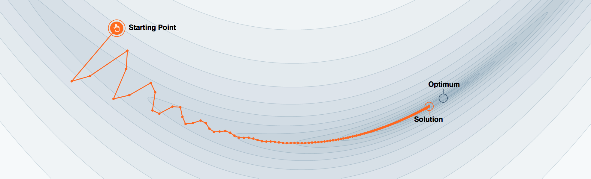

The teaser paragraph. It sits under the title, above the byline, and should give the reader the
one-sentence version of the argument before they commit to reading. Replace the hero image above
with your own figure, or delete the <figure> block entirely.
Body text goes here. Distill lays the article out on a named grid, so most content sits in the
text column while figures can opt into wider columns.
The available grid columns are text (the default), page, screen,
middle, and gutter. Set them with style="grid-column: page;" on a
figure or any block element.
Inline math with the element form: $$
delimiters configured in the front matter: $$x^2$$. Block math:
Cite one sourcebibliography.bib, which is loaded by the <d-bibliography> tag in the
appendix. Footnotes
Inline code:
| Model | Recall@10 | NDCG@10 |
|---|---|---|
| Baseline | 0.142 | 0.081 |
| + RoPE | 0.168 | 0.097 |
| + causal mask | 0.171 | 0.099 |
<figcaption>. Wrap interactive figures in
<d-figure> to get ready / onscreen / offscreen
lifecycle events for lazy initialization.That's the whole component set. Start deleting.
Who did what.
Who reviewed it, with links.